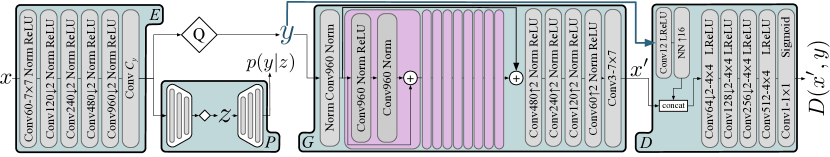
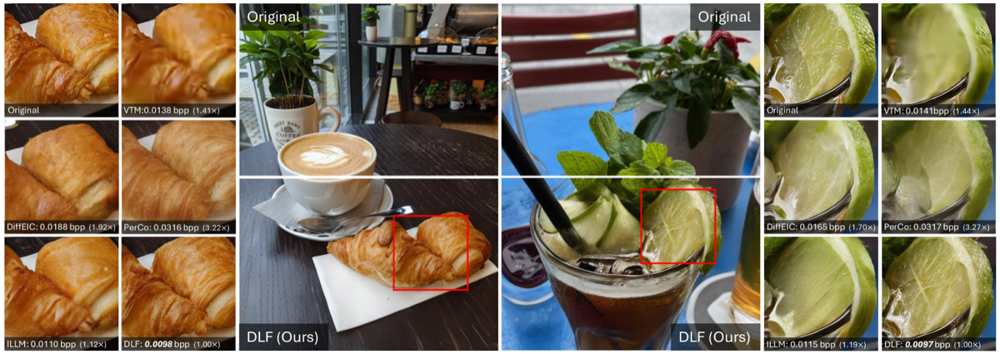
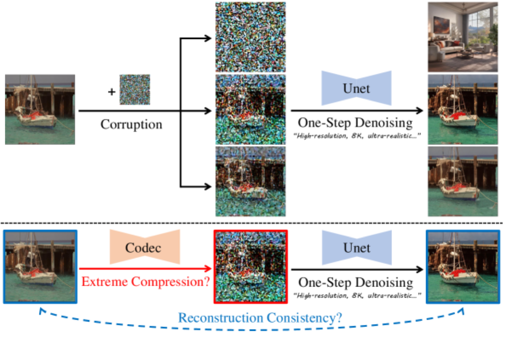
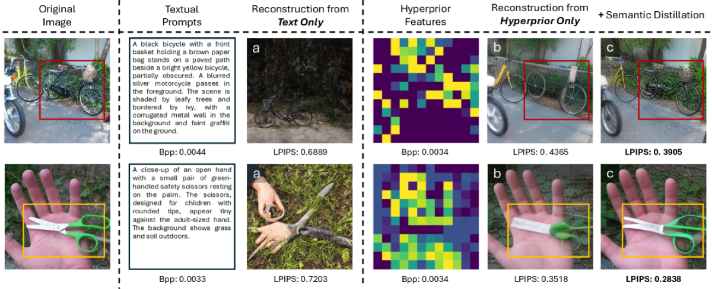
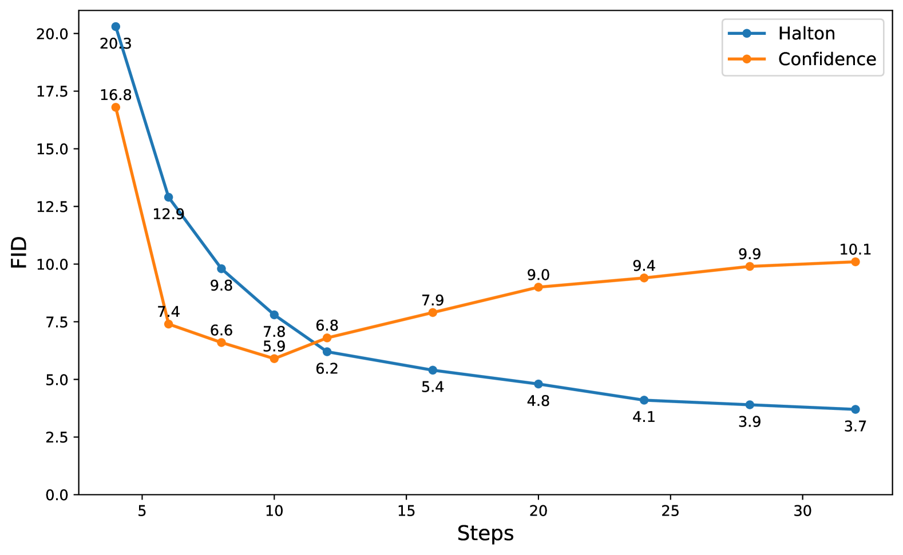

0.05 bpp 意味着一张 256×256 图像只有约 3277 bit，也就是 409 字节左右；如果进一步到 0.01 bpp，则只剩 655 bit，约 82 字节。这个预算不足以传输真实纹理，也不足以保留完整边缘和局部结构。传统 codec 在这个区域会出现严重块效应、振铃、过平滑和语义破坏。
因此，超低码率生成式压缩的基本前提是：编码端不再传输足够重建像素的信息，而是传输足够生成语义一致图像的信息。 解码端依赖生成先验补全纹理、局部细节和自然图像统计。
这不是一个小技巧，而是压缩目标函数的变化。传统压缩优化 rate-distortion：\(R+\lambda D\)。生成式压缩还要引入 perception：\(R, D, P\) 三者之间存在 Blau & Michaeli 所说的 Rate-Distortion-Perception tradeoff。

HiFiC 的意义不在于它是第一个使用 GAN 的 codec，而在于它系统地把用户研究引入学习式压缩，证明“更低失真”并不等价于“人眼更喜欢”。在低码率下，MSE/PSNR 优化倾向于平均多个可能纹理，结果是模糊；GAN/LPIPS 优化则倾向于选择一个自然图像流形上的 plausible 样本，结果更锐利、更真实。
这给后续超低码率压缩奠定了心理物理学基础：当人眼无法从少量比特中要求像素忠实，压缩系统可以优先保留语义结构，再由生成模型恢复纹理外观。
路线 A：VQGAN / latent-token 生成压缩，用离散 token 或 latent code 保存语义和结构；路线 B：diffusion 生成压缩，用压缩 latent 作为条件，让扩散模型补全真实细节。DLF、StableCodec、OneDC、CoD-Lite 都是在这两条路线交汇处展开。

VQGAN 压缩路线的基本思想是：先把图像映射到离散或半离散 latent，再在 latent 空间中进行压缩和生成。相比连续 latent，离散 token 的优势是码率清晰、可接入 AR/LM prior；相比传统 codec，它允许 decoder 利用生成先验恢复纹理。
但超低码率下，单一路径很容易失败。若所有信息都塞进一个 latent，模型要同时表达全局结构、对象语义、局部边缘、纹理风格，信息竞争非常严重。DLF 类双分支方法的直觉是：结构和细节不是同一种信息，应该用不同通道承载。
语义分支负责保存对象类别、空间布局、主要边缘、显著区域。这部分决定图像“是什么”。在极低码率下，语义分支是不可牺牲的，因为一旦语义错了，再真实的纹理也只是 hallucination。
细节分支负责保存纹理、局部高频、背景模式和感知质量。这部分决定图像“像不像自然图像”。极低码率下细节分支不可能完整传输原图纹理，只能提供生成器的约束或提示。
这类模型通常不是单一损失，而是多目标加权：
\[\mathcal L = R + \lambda_d D(x,\hat x) + \lambda_p \mathcal L_{perc} + \lambda_g \mathcal L_{GAN}+\lambda_s \mathcal L_{sem}\]
其中 \(R\) 控制码率，\(D\) 控制像素失真，perceptual/GAN loss 控制自然性，semantic loss 控制语义一致性。真正难点在于这些项互相冲突：增强 GAN 可能降低 PSNR，强化 pixel loss 又会抹掉纹理。
双分支带来结构清晰，但也引入训练不稳定、分支冗余、融合时机难选、推理开销较高等问题。若语义分支和细节分支没有明确分工，模型会退化为两个互相干扰的普通 encoder。
扩散模型的强项是从粗条件中生成高频细节。超低码率压缩正好提供了这样的场景：bitstream 只承载稀薄条件，decoder 要恢复自然图像流形上的一个合理样本。PerCo、DiffEIC 等多步扩散压缩证明了这一点，但也暴露出严重问题：解码太慢。
多步扩散的每一步都需要网络前向传播。20 步、50 步甚至更多步数意味着秒级解码，这对于图像 codec 几乎不可接受。于是 2025 年的核心突破变成：把扩散压缩从多步采样变成单步生成。
| 方法 | 生成机制 | 典型解码成本 | 主要贡献 | 主要风险 |
|---|---|---|---|---|
| PerCo | 多步 score/diffusion | 秒级 | 极低码率高感知质量 | 速度慢 |
| DiffEIC | latent guidance + diffusion prior | 多步，秒级 | 压缩 latent 引导扩散 | 工程部署困难 |
| StableCodec | one-step diffusion | 约 0.3s 级 | 辅助解码器分担结构 | 生成细节一致性 |
| OneDC | one-step diffusion + semantic distillation | 约 20× 加速 | hyperprior 作为语义条件 | 依赖蒸馏语义质量 |
| CoD-Lite | 轻量 diffusion codec | 实时级 | 局部注意力 + DMD 蒸馏 | 轻量模型上限 |

StableCodec 的设计非常值得单独拿出来看。它的基本判断是：单步扩散模型若同时承担结构恢复和细节生成，负担太重。结构一旦错，后续纹理越真实，幻觉越严重。因此 StableCodec 增加辅助解码器，从比特流中直接恢复结构性条件，再让扩散生成器专注高频细节。
这实际上把生成式压缩拆成两个问题：
这个分工与 DLF 的语义/细节双分支在思想上是一致的，只是 StableCodec 把“细节生成”交给了扩散模型。

OneDC 最有价值的地方不是“用了单步扩散”，而是重新解释了 hyperprior。传统 hyperprior 用于预测 latent 的尺度或概率参数：\(p(\hat y\mid \hat z)\)。OneDC 则进一步让 \(\hat z\) 承担语义条件角色：它不只是 entropy model 的 side information，也是生成器的一种 semantic prompt。
为了让 hyperprior 真正携带语义，OneDC 引入 semantic distillation，从预训练 generative tokenizer 中迁移语义知识。这把 continuous latent codec 与 visual tokenizer 研究线接了起来：tokenizer 提供语义结构，codec 负责把它压缩成可传输条件。

CoD-Lite 关注的是另一个现实问题：即使单步扩散可行，模型仍可能太重。它发现压缩任务中的注意力模式更偏局部，不需要像通用生成模型那样每一层都做全局注意力。用局部窗口注意力或深度可分离卷积替代全局注意力，可以显著降低计算开销。
这说明生成式 codec 的部署不是简单“把 Stable Diffusion 塞进 decoder”。压缩任务有自己的结构先验：输入不是纯噪声，而是带有低熵条件；目标不是任意生成，而是在原图约束下重建。因此轻量模型可以利用这些条件减少搜索空间。
扩散压缩要落地，关键不只是减少采样步数，还要减少每一步的模型成本。CoD-Lite 的价值在于把“one-step”进一步推进到“real-time”。
超低码率生成式压缩最危险的问题是 hallucination。一个压缩结果可以很自然、很锐利、LPIPS 很低，但语义上偏离原图。对社交图像这可能可以接受；对医学、遥感、安防、司法取证，这是不可接受的。
幻觉可以分成三层：
因此，未来的评价指标不能只看 PSNR、MS-SSIM、LPIPS、FID，还需要语义一致性指标，例如 CLIP/BLIP 一致性、检测框保持率、分割 mask 一致性、关键点误差，以及任务驱动指标。
生成式压缩适合感知消费场景，但不能无条件替代传统 codec。它需要明确标注适用边界，尤其不能在真实性敏感场景中默认使用。
| 层面 | 问题 | 可行路线 |
|---|---|---|
| 编码端 | 不能太重 | 轻 encoder、MobileNet/EfficientNet-lite、只提取语义结构 |
| 码率控制 | 极低码率下质量波动大 | 多码率训练、可变 token 数、semantic bit allocation |
| 解码端 | 生成模型太慢 | one-step diffusion、DMD/consistency distillation、局部注意力 |
| 可靠性 | 幻觉不可控 | 结构辅助解码器、语义一致性约束、任务指标检测 |
| 标准化 | bitstream 不兼容 | 定义 latent/token 语法、版本化生成器、fallback codec |
短期看，生成式超低码率压缩更可能先落地在缩略图、社交媒体预览、云端图像传输、低带宽内容消费等场景。长期看，若语义一致性可控，它可能成为传统 codec 在低码率端的补充层。
「超低码率不是普通压缩的低码率版本，而是另一个问题。」
「结构必须被约束，纹理可以被生成。」
「单步扩散解决速度问题，但不自动解决真实性问题。」